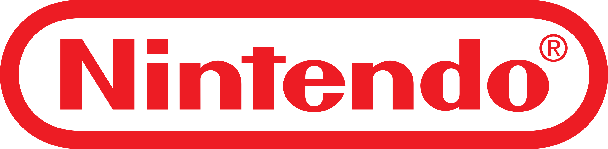

Pokemon Stadium
En Pokémon Stadium, los entrenadores pueden llevar sus batallas al siguiente nivel en impresionantes combates en 3D. Con una amplia selección de Pokémon de las versiones Red, Blue y Yellow, el juego permite a los jugadores enfrentarse en torneos desafiantes, duelos personalizados y el icónico Gym Leader Castle. Además, cuenta con una serie de minijuegos divertidos en el Kids Club, ideales para competir con amigos. Gracias a su compatibilidad con el Transfer Pak, es posible importar Pokémon desde los juegos de Game Boy, haciendo de Pokémon Stadium la mejor experiencia de combate Pokémon en la Nintendo 64.
- 3D (Batallas con modelos 3D)
- Gym (Enfrentamientos contra líderes de gimnasio)
- Rent (Pokémon rentados disponibles)
- Pack (Compatible con Transfer Pak)
- Mini (Modo de minijuegos en el Kids Club)
- Duel (Combates 1 vs 1 estratégicos)
Precio: $30.990
Comprar